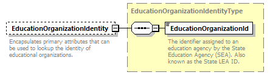
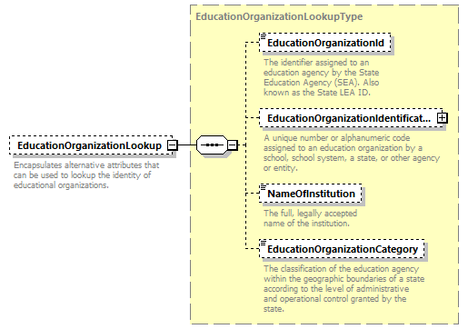

complexType
EducationOrganizationReferenceType
element EducationOrganizationReferenceType/EducationOrganizationIdentity
element EducationOrganizationReferenceType/EducationOrganizationLookup
element EducationOrganizationReferenceType/EducationOrganizationIdentity
| diagram |  | ||||||
| namespace | http://ed-fi.org/0200 | ||||||
| type | EducationOrganizationIdentityType | ||||||
| properties |
|
||||||
| children | EducationOrganizationId | ||||||
| annotation |
|
||||||
| source | <xs:element name="EducationOrganizationIdentity" type="EducationOrganizationIdentityType" minOccurs="0"> <xs:annotation> <xs:documentation>Encapsulates primary attributes that can be used to lookup the identity of educational organizations.</xs:documentation> <xs:appinfo> <ann:EdFiId>2114</ann:EdFiId> </xs:appinfo> </xs:annotation> </xs:element> |
element EducationOrganizationReferenceType/EducationOrganizationLookup
| diagram |  | ||||||
| namespace | http://ed-fi.org/0200 | ||||||
| type | EducationOrganizationLookupType | ||||||
| properties |
|
||||||
| children | EducationOrganizationId EducationOrganizationIdentificationCode NameOfInstitution EducationOrganizationCategory | ||||||
| annotation |
|
||||||
| source | <xs:element name="EducationOrganizationLookup" type="EducationOrganizationLookupType" minOccurs="0"> <xs:annotation> <xs:documentation>Encapsulates alternative attributes that can be used to lookup the identity of educational organizations.</xs:documentation> <xs:appinfo> <ann:EdFiId>2384</ann:EdFiId> </xs:appinfo> </xs:annotation> </xs:element> |